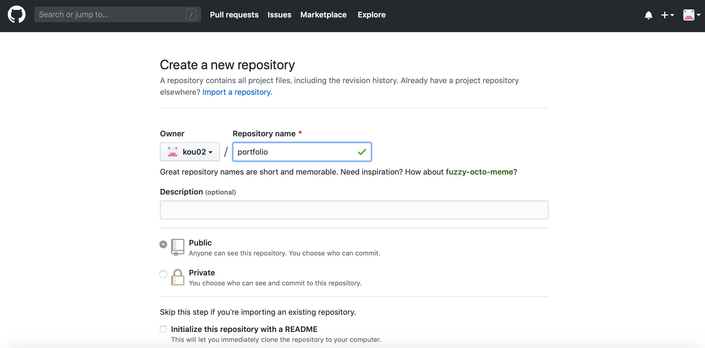

GitHubでポートフォリオを公開する方法[初心者向け]

エンジニアは就職する時や案件をもらう時にポートフォリオが必要になります。ポートフォリオの公開にわざわざ有料のサーバを借りるのは手間だという人はGithub Pagesを利用しましょう。Githubの登録が必要なので登録からアップロードまでの手順を紹介します。
GitHubに登録する
1
GitHubのページへアクセスし、上右部にあるSign upを押し登録画面に進みます。
2
必要な情報を入力していきます。
3
情報を入力し次へ進むと、freeかproかどちらかを選択できますがfreeで問題ないです。
freeを選択し次へ進むと入力したメールアドレス宛にメールが届くので、確認ボタンを押します。
以上でGithubの登録は終わりです。
新しいレポジトリの作成
ポートフォリオをアップするためのレポジトリを作成していきます。
1
Githubのtopページへ行き右上のプラスボタンから「New repository」へ進みます。
2

そしたらこちらの画面になるので「Repository name」のところにレポジトリの名前を入力します。ここではportfolioにしましたが任意の名前でOKです。
3
「New repository」へ入力が終わったら今回はそのままみ「Create repository」を押してください。
4
この画面になればGithubにレポジトリが作成された事になります。
リポジトリをローカルにcloneする
Giuhubに作成したレポジトリにポートフォリオをアップロードするため、リポジトリをローカルにクローンします。すると先ほどGithubで作成した「Repository name」と同じ名前のフォルダが作成されます。その中にアップロードしたいポートフォリオを入れます。
1
先ほどのこの画面で、赤で範囲選択したURLをコピーします。
2
ターミナル(Macの場合)を開きクローンを作成したいディレクトリに移動します。僕は「Desktop」に作成したいので「cd Desktop/」のコマンドでDesktopへ移動しています。
クローンを作成には「git clone [コピーしたURL]」になります。
すると赤線のようなコマンドになるので「Enter」を押し、実行結果が画像と同じような実行結果になれば成功です。
3
先ほどデスクトップにクローンしたフォルダにポートフォリオを入れます。今回私は「Hello World」と表示されるhtmlファイルを入れました。ではこれをアップロードしていきます。
4
まず作成したレポジトリのフォルダに移動するため「cd portfolio」とコマンドを打ちます
5
次に赤線部「git add index.html」と打ちます。続けて青線部「git commit -m "任意のコメント"」を入力し、画像のような表示になればOKです。
6
そして最後に緑線部「git push origin master」と入力し、画像のように表示されれば成功です。
アップロードできているか確認する
1
画像のsettingsという部分を押します。
2
下の方にスライドをしていくとGitHub Pagesという部分があるので「None」から「master branch」に変更します。
3
そしてURLの枠が緑になったら、あとはアクセスすれば無事アップロード出来ているはずです。
4
このようにHello Worldと表示されました。